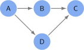
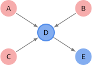
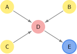
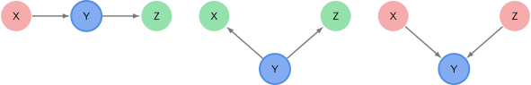
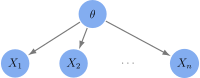
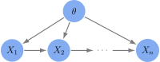

Graphical Models (Bayesian Networks)#
Directed Acyclic Graphs (DAG)#
Definition 3 (Directed Acyclic Graph)
A Directed Acyclic Graph (DAG) is a finite directed graph with no directed cycles.
DAG Example#

Fig. 1 DAG Example
It consists of finitely many nodes and edges, with each edge directed from one node to another, such that there is no way to start at any node \(v\) and follow a consistently-directed sequence of edges that eventually loops back to \(v\) again.
Bayesian Network#
Definition 4 (Bayesian Network)
A Bayesian network is a DAG with dependence semantics.
Each node represents a random variable.
Each edge encodes probabilistic dependencies between each random variable.
If a random variable \(Y\) is connected to \(X\) by a directed edge (\(Y\rightarrow X\)), then \(X\) is conditionally dependent on \(Y\). That is,
Bayesian networks are helpful as both a cognitive and computation tool.
Parents and Descendants#
Parents: The parents \(\text{Pa}(X)\) of a node \(X\) in a Bayesian network are the nodes that have a direct edge leading to the node. They represent the direct influencers of the node.
Descendants: The descendants \(\text{De}(X)\) of a node \(X\) are all nodes that can be reached by following directed edges starting from the node. They represent all nodes directly or indirectly influenced by the node.

Fig. 2 Parents and Descendants example
In Figure 2, nodes \(A\), \(B\) and \(C\) are parents of node \(D\) and node \(E\) is a descendant of node \(D\).
Conditional independence in Bayesian Networks#
A node in a Bayesian netowrk is conditionally independent of its non-descendants given its parents nodes.

Fig. 3 Conditional Independence Example
In Figure 3, we have \(\text{Pr}(E|A,B,C,D) = \text{Pr}(E|D)\).
Graph Compatibility#
Definition 5 (Graph Compatibility)
A distribution \(P\) is compatible with a DAG \(G\) if it satisfies the conditional independencies implied by \(G\). That is, suppose \(\underline{X}\sim P\), then
Chains, Forks and Colliders#

Fig. 4 Chains, Forks, and Colliders
Chain: Conditioning on \(Y\) ensures \(X\) and \(Z\) are independent.
Fork: Conditioning on \(Y\) ensures \(X\) and \(Z\) are independent.
Collider: Conditioning on \(Y\) creates a dependency between \(X\) and \(Z\).
Inference in a Bayesian Network#
#
Graphical Model Examples#
IID Bayesian Inference#
Suppose we have \(n\) independent observations \(X_i | \theta \sim \text{Distribution}(\theta)\). We can represent this as the following Bayesian Network:

Fig. 5 Chains, Forks, and Colliders
Markov Model#
Suppose we have \(n\) independent observations \(X_{i+1} | \theta, X_{i} \sim \text{Distribution}(\theta, X_i)\). We can represent this as the following Bayesian Network:

Fig. 6 Chains, Forks, and Colliders